Grouping of Encyclopedia Articles in Categories
This page groups most of the encyclopedia articles into one or several categories of topics. In this way, it is easier to find related articles.
Optical amplifiers
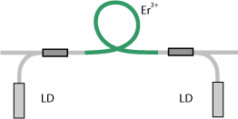
amplification factor
amplified spontaneous emission
amplifier chains
amplifier noise
amplifiers
erbium-doped fiber amplifiers
fiber amplifiers
fiber simulation software
gain
gain bandwidth
gain clamping
gain efficiency
gain equalization
gain guiding
gain media
gain narrowing
gain saturation
Giles parameters
high-power fiber lasers and amplifiers
laser transitions
master oscillator fiber amplifier
master oscillator power amplifier
multipass amplifiers
noise figure
nonlinear pulse distortion
parasitic lasing
pump absorption
Raman amplifiers
rate equation modeling
regenerative amplifiers
seed lasers
semiconductor optical amplifiers
slave laser
small-signal gain
stimulated emission
transition-metal-doped gain media
ultrafast amplifiers
Lightwave communications
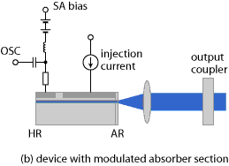
amplifier noise
bandwidth-distance product
bit error rate
differential mode delay
dispersion compensation
dispersion compensation modules
dispersion management
dispersion-shifted fibers
distributed amplifiers
electronic dispersion compensation
erbium-doped fiber amplifiers
few-mode fibers
fiber amplifiers
fiber-optic links
fiber-optic networks
fiber to the home
free-space optical communications
graded-index fibers
modal bandwidth
mode-locked diode lasers
multi-core fibers
optical data transmission
optical fiber communications
optical modulators
photonic integrated circuits
polarization mode dispersion
Raman amplifiers
semiconductor optical amplifiers
telecom fibers
time division multiplexing
wavelength division multiplexing
Fiber optics and waveguides
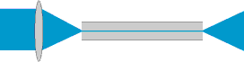
acceptance angle in fiber optics
adiabatic soliton compression
bandwidth-distance product
bend losses
Brillouin scattering
cladding mode strippers
cladding modes
cleaving of fibers
core-less end caps
cut-off wavelength
differential mode delay
dispersion-decreasing fibers
dispersion-shifted fibers
distributed amplifiers
distributed Bragg reflector lasers
double-clad fibers
effective mode area
effective refractive index
erbium-doped fiber amplifiers
few-mode fibers
fiber amplifiers
fiber Bragg gratings
fiber cables
fiber cleavers
fiber collimators
fiber connectors
fiber core
fiber-coupled diode lasers
fiber couplers
fiber fabrication
fiber fuse
fiber joints
fiber lasers
fiber lasers versus bulk lasers
fiber loop mirrors
fiber-optic links
fiber-optic networks
fiber-optic sensors
fiber optics
fiber patch cables
fiber polarization controllers
fiber simulation software
fiber to the home
fibers
fluoride fibers
fusion splicing of fibers
Giles parameters
graded-index fibers
group velocity dispersion
guided waves
high-power fiber lasers and amplifiers
higher-order modes
higher-order solitons
hollow-core fibers
insertion loss
intermodal dispersion
large-core fibers
large mode area fibers
leaky modes
LP modes
master oscillator fiber amplifier
microbends of fibers
mid-infrared fibers
modal bandwidth
mode coupling
mode-locked fiber lasers
mode radius
mode size converters
modes
multi-core fibers
multimode fibers
nanofibers
nonlinear polarization rotation
nonlinear pulse distortion
nonlinearities
numerical aperture
optical fiber communications
optical power monitors
phosphate glasses
photonic bandgap fibers
photonic crystal fibers
planar waveguides
plastic optical fibers
polarization beat length
polarization-maintaining fibers
polarization mode dispersion
power over fiber
propagation constant
quasi-soliton pulses
Raman amplifiers
Raman scattering
rare-earth-doped fibers
self-phase modulation
silica fibers
single-crystal fibers
single-mode fibers
single-polarization fibers
specialty fibers
step-index fibers
tapered fibers
telecom fibers
V number
waveguide dispersion
waveguide lasers
waveguides
zero dispersion wavelength
Fluctuations and noise
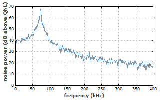
amplified spontaneous emission
coherent states
frequency noise
Gordon–Haus jitter
injection locking
injection seeding
intensity noise
laser noise
linewidth
narrow-linewidth lasers
noise eaters
noise-equivalent power
noise figure
noise specifications
nonclassical light
optical heterodyne detection
phase noise
power spectral density
Q-switching instabilities
quantum noise
recirculating fiber loops
relative intensity noise
Schawlow–Townes linewidth
self-heterodyne linewidth measurement
shot noise
signal-to-noise ratio
spontaneous emission
squeezed states of light
stabilization of lasers
standard quantum limit
synchronization of lasers
timing jitter
timing phase
vacuum noise
General optics
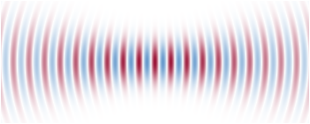
ABCD matrix
achromatic optics
anamorphic prism pairs
beam divergence
beam parameter product
beam quality
beam radius
beam splitters
beam waist
birefringence
Bragg gratings
Brewster plates
Brewster windows
Brewster's angle
brightness
cavities
chirped mirrors
chromatic aberrations
chromatic dispersion
coherence
coherence length
coherence time
collimated beams
diameter-divergence product
diffraction gratings
diffraction-limited beams
dispersion
dispersive mirrors
Faraday isolators
Faraday rotators
flat-top beams
fluence
focal length
Fresnel equations
Fresnel number
Gaussian beams
Gouy phase shift
group delay
group delay dispersion
group index
group velocity
group velocity dispersion
Hermite–Gaussian modes
higher-order modes
infrared light
insertion loss
instantaneous frequency
Kramers-Kronig relations
laser beams
laser light
laser viewing cards
lenses
M2 factor
metal-coated mirrors
mirrors
mode cleaners
mode matching
modes
neutral density filters
numerical aperture
optical density
optical frequency
optical intensity
optical phase
optical power
optical spectrum
optical thickness
paraxial approximation
phase velocity
photonic metamaterials
photons
polarization beam combining
polarization beat length
polarization of laser emission
polarizers
prism pairs
prisms
Rayleigh length
Rayleigh scattering
refraction
refractive index
resonator modes
return loss
rugate filters
Sellmeier formula
speckle
spectral beam combining
spectrometers
superluminal transmission
thin-film polarizers
ultraviolet light
unstable resonators
velocity of light
wave vector
wavelength
wavenumber
waveplates
zero dispersion wavelength
Lasers
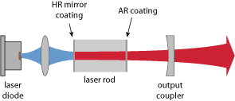
active mode locking
alexandrite lasers
alignment sensitivity
all-solid-state lasers
amplified spontaneous emission
argon ion lasers
beam combining
beam pointing fluctuations
blue lasers
brightness converters
broad-area laser diodes
bulk lasers
cavity dumping
ceramic gain media
chromium-doped gain media
CO2 lasers
coherent beam combining
composite laser crystals
continuous-wave operation
cooperative lasing
core-less end caps
cryogenic lasers
depolarization loss
diode bars
diode lasers
diode-pumped lasers
diode stacks
direct diode lasers
dispersion management
distributed Bragg reflector lasers
distributed feedback lasers
doped insulator lasers
doping concentration
dye lasers
edge-emitting semiconductor lasers
effective cross sections
end pumping
erbium-doped gain media
excimer lasers
excited-state absorption
external-cavity diode lasers
eye-safe lasers
femtosecond lasers
fiber-coupled diode lasers
fiber lasers
fiber lasers versus bulk lasers
forbidden transitions
four-level and three-level gain media
free electron lasers
gain
gain bandwidth
gain clamping
gain efficiency
gain media
gain narrowing
gain saturation
gain switching
gas lasers
green lasers
helium–neon lasers
high-power fiber lasers and amplifiers
high-power lasers
injection locking
injection seeding
intensity noise
interlocks
intracavity frequency doubling
intracavity laser absorption spectroscopy
lamp-pumped lasers
laser applications
laser beams
laser crystals
laser crystals versus glasses
laser design
laser development
laser diode drivers
laser diode modules
laser diodes
laser dynamics
laser heads
laser-induced damage
laser light
laser mirrors
laser modeling
laser noise
laser physics
laser pointers
laser resonators
laser safety
laser specifications
laser threshold
laser transitions
lasers
lasing without inversion
linewidth
linewidth enhancement factor
lower-state lifetime
master laser
master oscillator fiber amplifier
master oscillator power amplifier
microchip lasers
mid-infrared laser sources
mode competition
mode hopping
mode-locked diode lasers
mode-locked fiber lasers
mode-locked lasers
mode locking
modes of laser operation
molecular lasers
monolithic solid state lasers
nanosecond lasers
narrow-linewidth lasers
neodymium-doped gain media
nonplanar ring oscillators
optical pumping
oscillators
output couplers
output coupling efficiency
parasitic lasing
passive mode locking
picosecond lasers
polarization of laser emission
power scaling of lasers
pump absorption
pump chambers
pump depletion
pump parameter
Q-switched lasers
quantum cascade lasers
quasi-continuous-wave operation
radiation-balanced lasers
Raman lasers
red lasers
relative intensity noise
relaxation oscillations
RGB sources
ring lasers
rod lasers
Schawlow–Townes linewidth
seed lasers
self-starting mode locking
self-terminating laser transitions
semiconductor lasers
side pumping
single-atom lasers
single-frequency lasers
single-frequency operation
single-mode operation
slab lasers
slave laser
slope efficiency
solid state lasers
soliton mode locking
spatial hole burning
spectral beam combining
spiking
stabilization of lasers
stimulated emission
surface-emitting semiconductor lasers
synchronization of lasers
thermal lensing
thin-disk lasers
threshold pump power
thresholdless lasers
titanium–sapphire lasers
transition cross sections
transition-metal-doped gain media
tunable lasers
tungstate lasers
twisted-mode technique
ultrafast laser physics
ultrafast lasers
ultraviolet lasers
upconversion lasers
vanadate lasers
vertical cavity surface-emitting lasers
vertical external-cavity surface-emitting lasers
vibronic lasers
visible lasers
wall-plug efficiency
waveguide lasers
wavelength tuning
X-ray lasers
YAG lasers
yellow and orange lasers
YLF lasers
ytterbium-doped gain media
Optical materials
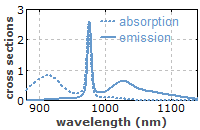
ceramic gain media
chromium-doped gain media
clustering
composite laser crystals
doped insulator lasers
doping concentration
erbium-doped gain media
fluoride fibers
four-level and three-level gain media
gain media
laser crystals
laser crystals versus glasses
neodymium-doped gain media
nonlinear crystal materials
orientation-patterned semiconductors
periodic poling
phosphate glasses
photodarkening
photonic metamaterials
rare-earth-doped fibers
rare-earth-doped gain media
silica fibers
transition-metal-doped gain media
tungstate lasers
vanadate lasers
vibronic lasers
YAG lasers
YLF lasers
ytterbium-doped gain media
Methods

ABCD matrix
active mode locking
beam combining
chirped-pulse amplification
coherent beam combining
dispersion compensation
dispersion management
divided-pulse amplification
Doppler cooling
electro-optic sampling
end pumping
eye protection
fiber simulation software
fluorescence microscopy
frequency combs
frequency-resolved optical gating
Giles parameters
harmonic mode locking
Haus Master equation
injection locking
injection seeding
intracavity laser absorption spectroscopy
Kerr lens mode locking
laser cooling
laser design
laser development
laser guide stars
laser marking
laser microscopy
laser modeling
laser safety
laser specifications
light forces
mode coupling
mode locking
noncritical phase matching
optical coherence tomography
optical heterodyne detection
optical parametric chirped-pulse amplification
optical pumping
optical refrigeration
optical sampling
optical tweezers
orientation-patterned semiconductors
passive mode locking
periodic poling
phase matching
phase shift method for distance measurements
photoconductive sampling
polarization beam combining
power scaling of lasers
prism pairs
pulse compression
pulse generation
pulse propagation modeling
pump–probe measurements
Q-switched mode locking
Q switching
quantum cryptography
quantum key distribution
quasi-phase matching
rate equation modeling
reciprocity method
recirculating fiber loops
resonant frequency doubling
resonator design
self-heterodyne linewidth measurement
side pumping
single photon counting
Sisyphus cooling
soliton mode locking
spectral beam combining
spectral interferometry
spectroscopy
stabilization of lasers
synchronization of lasers
synchronous pumping
time division multiplexing
time-of-flight measurements
triangulation
twisted-mode technique
wavelength division multiplexing
wavelength tuning
z-scan measurements
Optical metrology
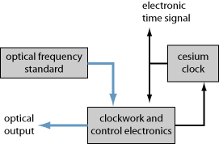
autocorrelators
avalanche photodiodes
beam profilers
beat note
carrier–envelope offset
decibel
distance measurements with lasers
frequency metrology
frequency-resolved optical gating
integrating spheres
interferometers
laser-induced damage
M2 factor
optical clocks
optical clockworks
optical coherence tomography
optical frequency
optical frequency standards
optical heterodyne detection
optical metrology
optical power monitors
phase shift method for distance measurements
photodiodes
photomultipliers
phototubes
power density
power spectral density
pulse characterization
pulse duration
pulse energy
pulse repetition rate
pump–probe measurements
reference cavities
self-heterodyne linewidth measurement
signal-to-noise ratio
spectral brightness
spectral interferometry
spectral phase
spectrometers
spectroscopy
time-of-flight measurements
timing jitter
timing phase
triangulation
wavemeters
white light interferometers
z-scan measurements
Nonlinear optics
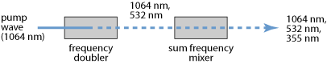
B integral
birefringent phase matching
Brillouin scattering
coherence length
critical phase matching
cross-phase modulation
crystal ovens
effective mode area
effective nonlinear coefficient
electro-optic effect
electro-optic modulators
fiber loop mirrors
four-wave mixing
frequency doubling
frequency quadrupling
frequency tripling
group velocity mismatch
high harmonic generation
hyper Raman scattering
intracavity frequency doubling
Kerr effect
Kerr lens
mid-infrared laser sources
noncritical phase matching
nonlinear crystal materials
nonlinear frequency conversion
nonlinear index
nonlinear optics
nonlinear polarization
nonlinear polarization rotation
nonlinear pulse distortion
nonlinearities
optical parametric amplifiers
optical parametric generators
optical parametric oscillators
optical rectification
orientation-patterned semiconductors
parabolic pulses
parametric amplification
parametric fluorescence
periodic poling
phase matching
phase-matching bandwidth
pump depletion
quasi-phase matching
quasi-soliton pulses
Raman amplifiers
Raman gain
Raman lasers
Raman scattering
resonant frequency doubling
RGB sources
saturable absorbers
self-focusing
self-phase modulation
soliton period
solitons
spatial walk-off
Stokes shift
sum and difference frequency generation
supercontinuum generation
temporal walk-off
terahertz radiation
threshold pump power
visible lasers
z-scan measurements
Photonic devices
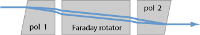
acousto-optic modulators
anti-reflection coatings
arrayed waveguide gratings
autocorrelators
avalanche photodiodes
beam profilers
beam shapers
birefringent tuners
Bragg mirrors
Brewster plates
brightness converters
chirped mirrors
crystalline mirrors
dichroic mirrors
dielectric coatings
dielectric mirrors
dispersion-compensation modules
dispersive mirrors
electro-optic modulators
electroabsorption modulators
enhancement cavities
erbium-doped fiber amplifiers
etalons
Faraday isolators
Faraday rotators
fiber amplifiers
fiber Bragg gratings
fiber couplers
fiber loop mirrors
fiber-optic sensors
fiber polarization controllers
fluorescent lamps
Gires–Tournois interferometers
infrared viewers
integrated optics
integrating spheres
intensity modulators
interferometers
laser diode drivers
laser diode modules
laser mirrors
laser viewing cards
lenses
light-emitting diodes
Lyot filters
metal–semiconductor–metal photodetectors
metal-coated mirrors
mid-infrared laser sources
mode cleaner cavities
mode cleaners
mode size converters
multipass gas cells
neutral density filters
noise eaters
optical attenuators
optical clocks
optical clockworks
optical filters
optical modulators
optical parametric amplifiers
optical parametric generators
optical parametric oscillators
optical power monitors
optoelectronics
output couplers
p–i–n photodiodes
phase modulators
photoconductive switches
photodetectors
photodiodes
photomultipliers
photonic integrated circuits
photonics
phototubes
planar waveguides
Pockels cells
powermeters
pulse pickers
pump chambers
Q switches
quantum dots
quantum wells
quarter-wave mirrors
rugate filters
saturable absorbers
saturable Bragg reflectors
semiconductor saturable absorber mirrors
silicon photonics
single photon counting
superluminescent diodes
superluminescent sources
supermirrors
velocity-matched photodetectors
volume Bragg gratings
wavemeters
waveplates
white light interferometers
white light sources
Physical foundations

bandwidth
causality
chemiluminescence
Doppler broadening
effective cross sections
electro-optic effect
electroluminescence
energy transfer
excited-state absorption
fiber simulation software
fluorescence
forbidden transitions
Fuchtbauer-Ladenburg equation
gain guiding
gain narrowing
gain saturation
homogeneous broadening
homogeneous saturation
inhomogeneous broadening
inhomogeneous saturation
interference
Kerr effect
Kerr lens
Kramers-Kronig relations
laser-induced breakdown
laser-induced damage
laser modeling
laser physics
laser transitions
linewidth
linewidth enhancement factor
luminescence
McCumber theory
metastable states
mode competition
multi-phonon transitions
multiphonon absorption
multiphoton absorption
non-radiative transitions
nonlinear polarization
optical frequency
optical phase
optical spectrum
parametric nonlinearities
phase velocity
phonons
phosphorescence
photoluminescence
photonic metamaterials
photons
Pockels effect
polarization waves
population inversion
pulse propagation modeling
pump absorption
quantum defect
quantum efficiency
quenching
Rabi oscillations
radiation pressure
radiative lifetime
Raman gain
Raman scattering
rate equation modeling
reciprocity method
saturation energy
saturation power
small-signal gain
spatial hole burning
spatial walk-off
stimulated emission
superluminal transmission
superluminescence
terahertz radiation
thermal lensing
third-order dispersion
transition cross sections
two-photon absorption
upconversion
upper-state lifetime
velocity of light
Light pulses
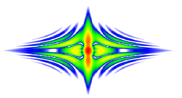
active mode locking
additive-pulse mode locking
adiabatic soliton compression
autocorrelators
bandwidth-limited pulses
carrier–envelope offset
cavity dumping
chirp
chirped mirrors
chirped-pulse amplification
chromatic dispersion
differential mode delay
dispersion compensation
dispersion compensation modules
dispersion-decreasing fibers
dispersion management
dispersion-shifted fibers
dispersive wave
divided-pulse amplification
double pulses
femtosecond lasers
frequency combs
frequency-resolved optical gating
fundamental mode locking
gain switching
Gaussian pulses
Gires–Tournois interferometers
Gordon–Haus jitter
group delay
group delay dispersion
group velocity
group velocity dispersion
group velocity mismatch
harmonic mode locking
Haus Master equation
high harmonic generation
higher-order solitons
injection locking
injection seeding
instantaneous frequency
Kelly sidebands
Kerr lens mode locking
Kuizenga-Siegman theory
laser-induced damage
modal bandwidth
mode-locked diode lasers
mode-locked fiber lasers
mode-locked lasers
mode locking
nanosecond lasers
nonlinear polarization rotation
nonlinear pulse distortion
optical parametric chirped-pulse amplification
parabolic pulses
passive mode locking
peak power
picosecond lasers
prism pairs
pulse characterization
pulse compression
pulse duration
pulse energy
pulse front tilt
pulse generation
pulse pickers
pulse propagation modeling
pulse repetition rate
pulsed laser deposition
pulsed lasers
pulses
Q-switched lasers
Q-switched mode locking
Q switching
Q-switching instabilities
quasi-continuous-wave operation
quasi-soliton pulses
regenerative amplifiers
saturable absorbers
saturable Bragg reflectors
sech2-shaped pulses
self-starting mode locking
semiconductor saturable absorber mirrors
soliton mode locking
soliton period
solitons
spectral interferometry
spectral phase
spectrograms
synchronization of lasers
synchronous pumping
time-bandwidth product
time-of-flight measurements
transform limit
ultrafast amplifiers
ultrafast laser physics
ultrafast lasers
ultrafast optics
ultrashort pulses
Quantum optics
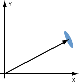
amplified spontaneous emission
amplitude-squeezed light
coherent states
Doppler cooling
Doppler limit
laser cooling
lasing without inversion
light forces
nonclassical light
optical heterodyne detection
optical molasses
optical pumping
optical refrigeration
parametric fluorescence
photons
quantum cryptography
quantum dots
quantum key distribution
quantum noise
quantum optics
quantum wells
Rabi oscillations
radiation pressure
recoil limit
Schawlow–Townes linewidth
shot noise
single-atom lasers
single photon counting
Sisyphus cooling
spontaneous emission
squeezed states of light
standard quantum limit
superfluorescence
superradiance
thresholdless lasers
vacuum noise
Optical resonators
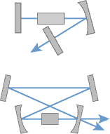
alignment sensitivity
cavities
crystalline mirrors
distributed feedback lasers
enhancement cavities
etalons
Fabry–Perot interferometers
finesse
free spectral range
Fresnel number
Gires–Tournois interferometers
Hermite–Gaussian modes
higher-order modes
intracavity frequency doubling
laser resonators
mode cleaner cavities
mode competition
mode hopping
mode matching
modes
nonplanar ring oscillators
optical frequency
photonic metamaterials
Q factor
reference cavities
resonant frequency doubling
resonator design
ring lasers
stability zones
unstable resonators